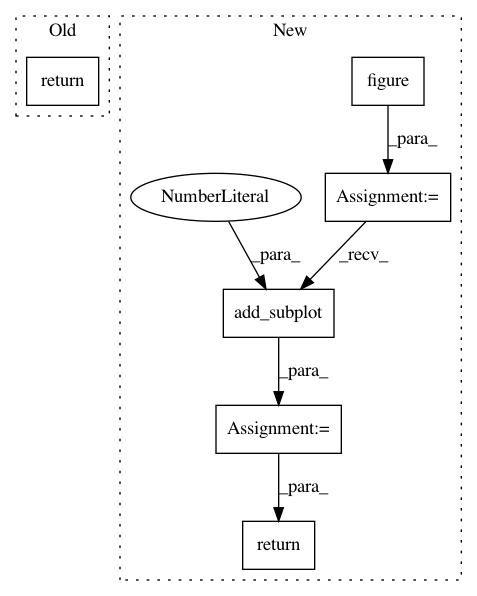

9a7f0304bf18d33825913f522de8a90114d8c5ca,umap/plot.py,,connectivity,#Any#Any#Any#Any#Any#Any#Any#Any#Any#Any#Any#Any#Any#,438
Before Change
point_img = tf.dynspread(point_img, threshold=0.5, max_px=px_size)
return tf.stack(edge_img, point_img, how="over")
else:
return edge_img
def diagnostic(
umap_object,
After Change
result = edge_img
dpi = plt.rcParams["figure.dpi"]
fig = plt.figure(figsize=(width / dpi, height / dpi))
ax = fig.add_subplot(111)
_embed_datashader_in_an_axis(result, ax)
ax.set(xticks=[], yticks=[])
ax.text(0.99,
0.01,
"UMAP: n_neighbors={}, min_dist={}".format(umap_object.n_neighbors,
umap_object.min_dist),
transform=ax.transAxes,
horizontalalignment="right")
return ax
def diagnostic(
umap_object,
In pattern: SUPERPATTERN
Frequency: 3
Non-data size: 6
Instances
Project Name: lmcinnes/umap
Commit Name: 9a7f0304bf18d33825913f522de8a90114d8c5ca
Time: 2018-10-20
Author: leland.mcinnes@gmail.com
File Name: umap/plot.py
Class Name:
Method Name: connectivity
Project Name: lmcinnes/umap
Commit Name: 9a7f0304bf18d33825913f522de8a90114d8c5ca
Time: 2018-10-20
Author: leland.mcinnes@gmail.com
File Name: umap/plot.py
Class Name:
Method Name: points
Project Name: SheffieldML/GPy
Commit Name: 01d6b91f9079dfc4aab01c6531d5e9ff4a6b326e
Time: 2014-05-16
Author: ibinbei@gmail.com
File Name: GPy/models/mrd.py
Class Name: MRD
Method Name: plot_latent